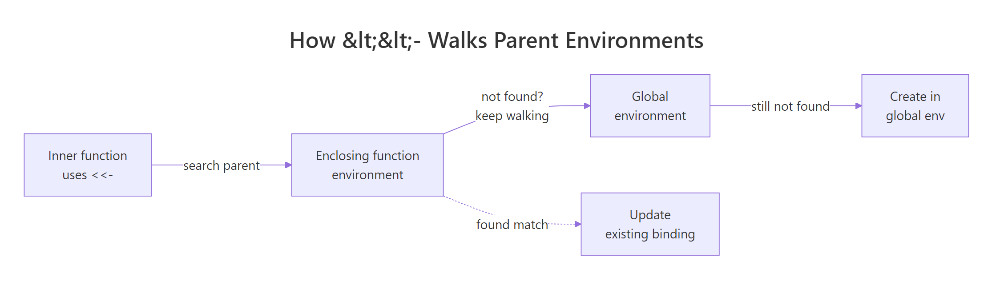
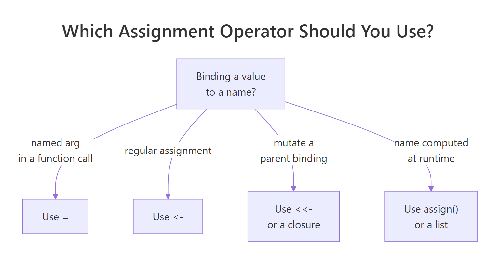

<- vs = vs <<- in R: The Definitive Guide to Assignment Operators
R has five assignment operators, <-, =, <<-, ->, and ->>, plus the assign() function. They look similar but differ in where they write, when they're allowed, and how they handle scope. This guide shows exactly what each one does and which to reach for.
What does <- actually do?
<- is R's standard assignment operator. It takes whatever is on the right, evaluates it, and binds the result to the name on the left, in the current environment. That's the whole contract. But "current environment" hides most of the interesting behavior, so let's start by running <- in three places, the console, a function body, and a for loop, and confirming where each binding lives.
Three different contexts, one consistent rule: <- writes to whatever environment the line is evaluated in. At the console that means the global environment. Inside demo(), it means the function's own environment, which is why inner is gone the moment demo() returns. The for loop doesn't make a new environment, so counter keeps updating the same global binding.
<- in R. Functions make new environments; { } blocks and loops do not.Try it: Write code that assigns the area of a 5 x 7 rectangle to ex_area and prints it.
Click to reveal solution
Explanation: <- evaluates the right-hand expression (5 * 7) and binds the result (35) to ex_area in the current environment.
When is = a valid replacement for <-?
= also assigns, but only at the top level or inside a { } block. The twist is that = does double duty: inside a function call, it names an argument instead of creating a variable. That single context switch is where most of the confusion (and most of the bugs) live.
At the top level, a = 1 and b <- 2 do exactly the same thing. Both bind a name in the global environment. No hidden difference. So why prefer <-? Because of what happens when you use = vs <- inside a function call.
Notice what happened. Using = inside lm() told R "pass mtcars as the data argument", nothing leaked outside the call. Using <- looks almost identical, but it did two things at once: it created a global variable called data (a full copy of mtcars), and it passed that value positionally into lm(). Your workspace now has a stray data object you never asked for. In a long script, that shadowing will eventually bite you.
data <- mtcars inside a call is one of R's top-five bug sources, the code runs, the model fits, and yet your workspace now has a mystery variable shadowing real data. Always use = to name arguments.Try it: The line below accidentally creates a global variable. Rewrite it so only my_fit is created.
Click to reveal solution
Explanation: Replace the <- with = so R reads formula as the argument name, not as a new variable to create. Now nothing leaks into the workspace.
What does <<- do in the parent environment?
<<- is called the super-assignment operator. Unlike <-, it does not write to the current environment. Instead, it walks up the chain of parent environments looking for an existing binding with the same name. If it finds one, it updates that binding. If it walks all the way to the global environment without finding one, it creates the binding there.
That sounds abstract until you see it power a stateful function.
Look closely at tick(). Inside the function, count <<- count + 1 does not create a local variable. The <<- tells R: "find an existing count in a parent environment and update it." R walks out of tick(), finds count in the global environment, and increments it. After three calls, the global count is 3, without ever being returned from tick(). That persistent side effect is the whole point of <<-.

Figure 1: How <<- walks up parent environments looking for an existing binding.
The same mechanism powers the classic R closure pattern, a function factory that bakes in its own private counter.
This time <<- does not reach the global environment. It walks one step out of the inner function, finds count in the factory's enclosing environment, and stops there. Each counter made by make_counter() has its own private count, hidden from the outside world. This is how you build mutable state in R without polluting the global workspace.
<<- through ordinary functions makes code hard to reason about, "where does this variable actually live?" should never be a question your reader has to answer.Try it: Modify make_counter() so it starts at 10 and increments by 5 each call. Save the factory as ex_make_counter.
Click to reveal solution
Explanation: count <- 10 sets the starting value in the factory's environment. count <<- count + 5 walks up one level to find and update it, so each call bumps the private counter by 5.
Why does R even have -> and ->>?
-> is just <- backwards. It evaluates the left side and binds it to a name on the right, same semantics, reversed direction. ->> is the super-assignment twin of ->, behaving exactly like <<-. Rarely used, but perfectly valid, and handy at the end of a pipe where "the name comes last" reads naturally.
Read the pipe left-to-right: take mtcars, keep rows where mpg > 25, take the first three, and bind the result to top_cars. Many R users find this reads more like English than top_cars <- mtcars |> subset(...) |> head(3). Both are correct. Pick whichever matches the direction your eye wants to travel.
1 ->> tally reads as "write 1 into an existing tally in a parent environment." It's the same behavior as tally <<- 1, just written backwards. Almost no style guide recommends ->> in production code, but it's legal, so you'll spot it occasionally in older scripts.
-> at the end of a pipe; Google's R style guide discourages it. If your team has a convention, follow it. If not, using -> at the end of the occasional long pipe is fine.Try it: Rewrite the line below using -> instead of <-.
Click to reveal solution
Explanation: -> binds the left-hand value to the name on the right. Semantically identical to <-, just mirror-flipped.
When should you use assign() instead?
assign(name, value, envir) is the function-form cousin of <-. It takes the variable name as a string instead of as a literal symbol. That matters exactly when the name is computed at runtime, for example, when you want to create variables whose names come from a vector.
You couldn't do this with <- alone, because <- needs a literal name on its left side, you can't put a string there. assign() accepts the name as text, resolves it, and binds the value in whatever environment you point it at (defaulting to the current one). It's the escape hatch when <- can't express what you want.
That said, most of the time you reach for assign() because you're about to generate a bunch of similarly-named variables in a loop, and that's almost always a sign you should use a list instead.
Same information, one object, fully subsettable. You can lapply() over it, pass it around, save it with saveRDS(). Three floating globals cannot do any of that. Keep assign() in your toolkit for the rare case where you truly need dynamic names, for example, when writing a utility that creates dataset objects from file names, but reach for a list first.
assign() with dynamic names scatters values across your workspace, while a list keeps them together and plays well with every functional tool in R.Try it: Use assign() to create a variable ex_x with value 7 in the current environment.
Click to reveal solution
Explanation: assign("ex_x", 7) passes the name as a string. Without an envir argument, it writes to the current environment, same as ex_x <- 7.
Which operator should you use day-to-day?
Here's the short version. Use <- for every regular assignment. Use = to name arguments inside function calls. Reach for <<- only inside function factories or closures where the scope is obvious. Use assign() only when the variable name is genuinely computed at runtime. -> and ->> are legal but rarely the clearest choice.
| Operator | Use when | Avoid when |
|---|---|---|
<- |
Every regular assignment in scripts, functions, loops | (no reason to avoid) |
= |
Naming arguments in a function call: lm(data = df) |
Outside of argument lists, use <- instead |
<<- |
Mutating a closure's private state | In ordinary function bodies, use return values |
-> |
End of a long pipe, when reading left-to-right helps | Short expressions, <- is clearer |
assign() |
Variable name is computed at runtime | Anywhere a list would work, it almost always does |

Figure 2: Decision tree for choosing the right assignment operator.
One more detail worth knowing: the leftward operators (<-, =, <<-) group right-to-left. That's what makes chained assignment work.
R reads the chain from the right: first chain_c <- 1, then chain_b <- chain_c, then chain_a <- chain_b. All three names end up bound to 1. This is occasionally useful for initializing several counters to the same starting value. It also explains why a <- b <- c never assigns b to a first, R is reading the other way.
<- for assignment and = for named arguments. Memorize that sentence and you'll never second-guess which operator to reach for in day-to-day scripts.Try it: Chain-assign the value 100 to three variables named ex_p, ex_q, ex_r in a single line.
Click to reveal solution
Explanation: R processes <- right-to-left: ex_r <- 100 first, then ex_q <- ex_r, then ex_p <- ex_q. All three end up bound to 100.
Practice Exercises
Exercise 1: Stateful scorekeeper
Write a factory function make_scorer() that returns a list with two functions: add_points(n) to add points and get_total() to return the running total. Use <<- so the running total persists across calls. Save the factory as my_scorer_factory and use it to tally 5 + 3 + 7 points.
Click to reveal solution
Explanation: total lives in the factory's environment, private to each scorer. add_points() uses <<- to walk one level out and update the shared total. get_total() just reads it. Each call to my_scorer_factory() makes a fresh, independent counter.
Exercise 2: Operator refactor
The script below runs, but it has two stylistic problems: one line creates a stray global variable through a <- inside a function call, and one line uses = where <- is clearer. Rewrite the two lines using the right operators. Save the final model to my_final_fit.
Click to reveal solution
Explanation: First line: = at the top level works, but <- is the convention, it reads unambiguously as "assign." Second line: data = my_clean_df passes the data frame as the named data argument without leaking a global. No mystery variables, no shadowing.
Complete Example
Let's tie every operator together with a short, realistic script: a transaction log that records deposits and withdrawals. We'll use <- for regular bindings, = for named arguments, <<- inside a closure to keep the running balance, and -> at the end of a summary pipe.
Walk through what each operator did. <- created every ordinary binding, balance, log, record, acct. The = in make_account(opening_balance = 100) named an argument without polluting the global workspace. <<- let record() update balance and log in its enclosing factory environment, giving us persistent state without a global. And -> at the end of the pipe read left-to-right: "take the history, filter to deposits, count rows, call that total_deposits." Every operator pulled its weight, and nothing leaked outside acct.
Summary
<-, the everyday assignment operator. Binds in the current environment. Use it everywhere by default.=, equivalent to<-at the top level, but its real job is naming arguments in function calls. Reserve it for that.<<-, super-assignment. Walks parent environments to update an existing binding. Use inside closures/factories, not loose function bodies.->and->>, rightward twins of<-and<<-. Legal, occasionally readable at the end of a pipe, rarely essential.assign(), function form that takes the name as a string. Use only when the name is genuinely computed at runtime; reach for a list first.
If you remember one sentence from this guide, make it this: <- for assignment, = for named arguments. Everything else is edge cases.
References
- R Core Team, Assignment Operators, R-devel base documentation. Link
- Wickham, H., Advanced R, 2nd Edition. Chapter 7: Environments. Link
- Wickham, H., Advanced R, 2nd Edition. Chapter 6: Functions (lexical scoping). Link
- tidyverse style guide, Assignment. Link
- Google R Style Guide, Assignment. Link
- Ren, K., Difference between assignment operators in R, renkun.me (2014). Link
- R-bloggers, Global vs. local assignment operators in R. Link
Continue Learning
- R Environments, a deeper look at the environment chain
<<-walks up. - R Closures, the idiomatic pattern for mutable state without loose
<<-calls. - Lexical Scoping in R, why R looks up variables the way it does, and why
<-and<<-diverge.